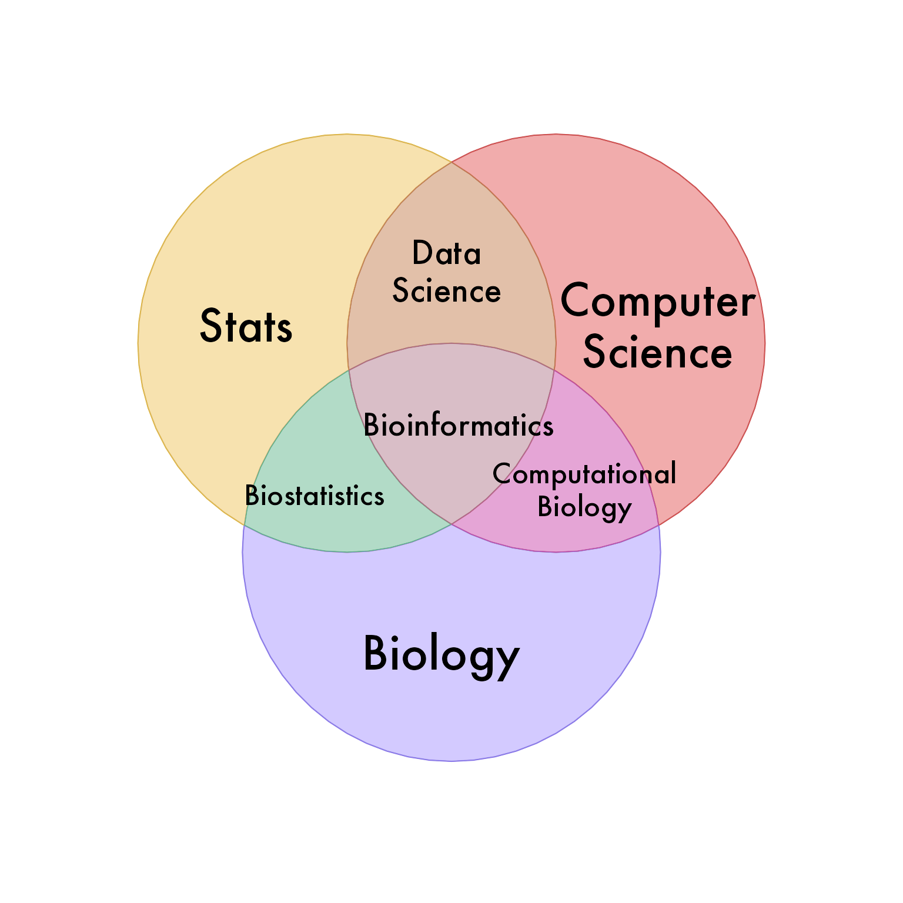
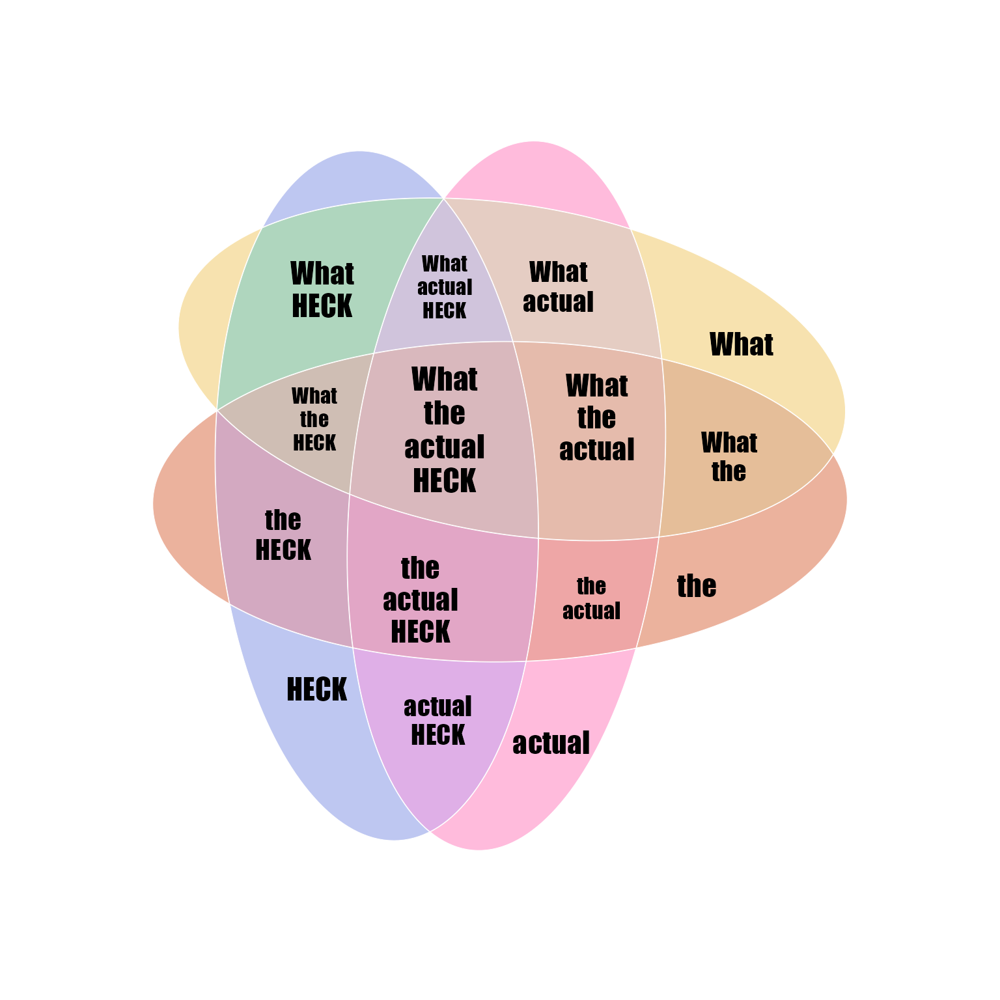
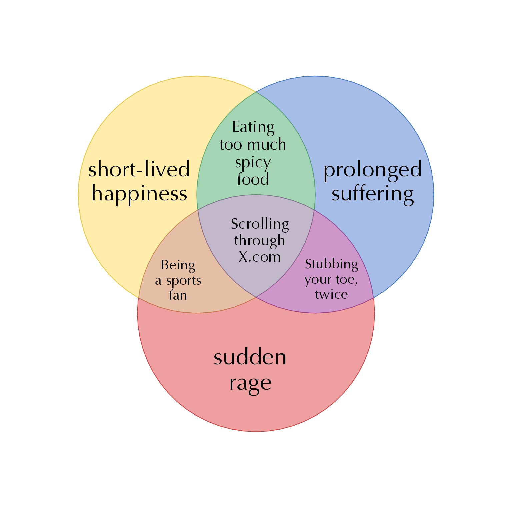
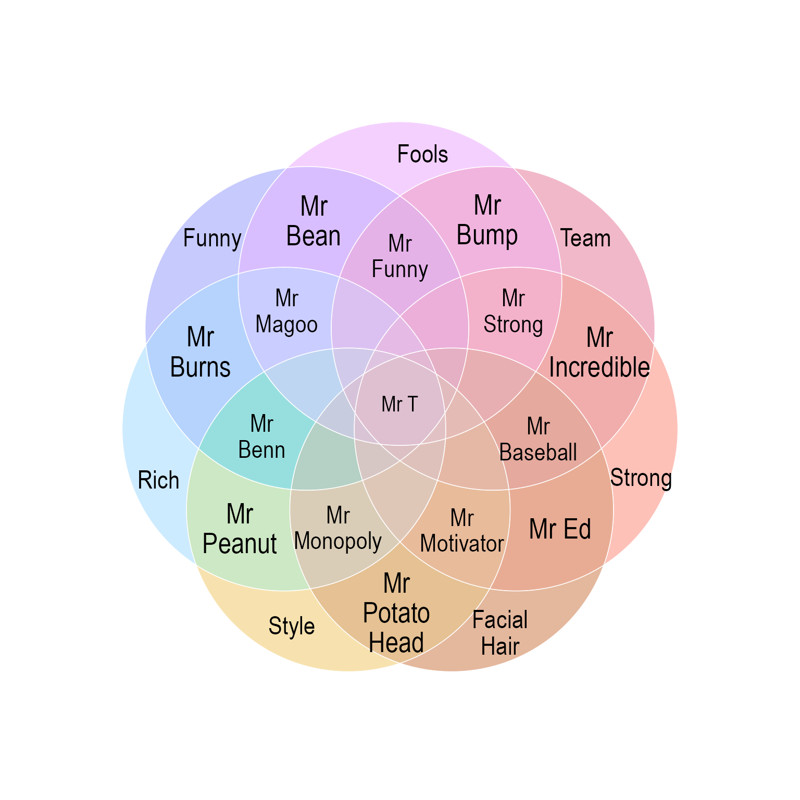
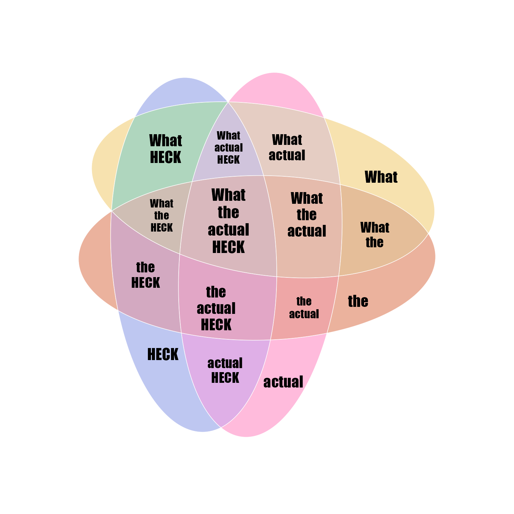
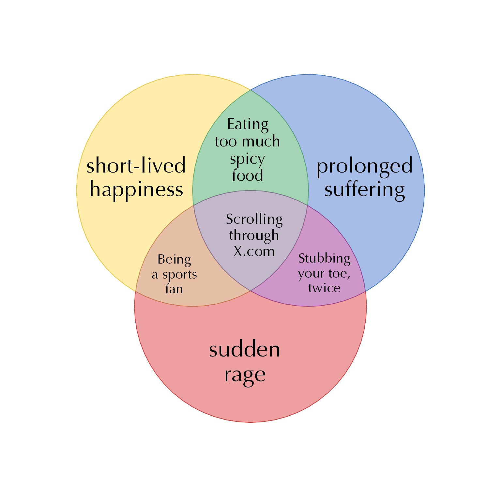
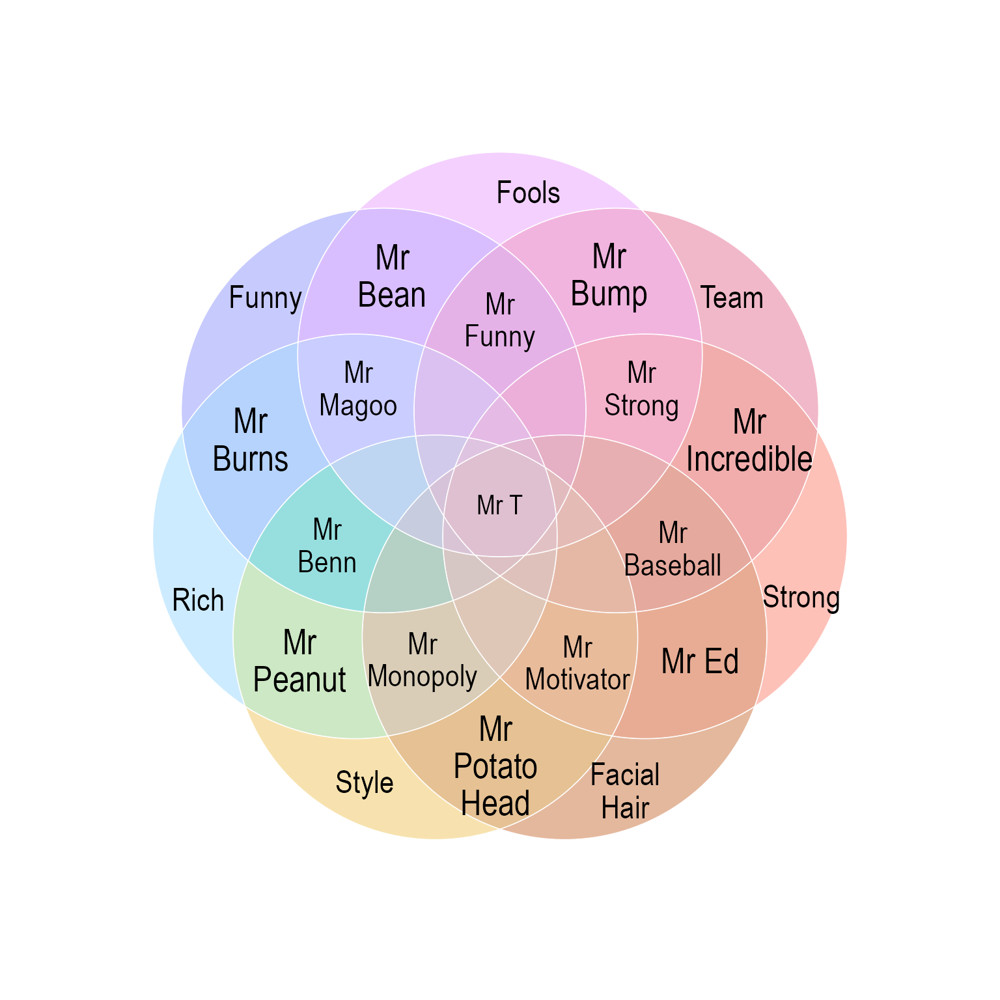

Venn Meme or Concept Venn
Usage
venn_meme(
x,
proportional = FALSE,
item_cex = 1,
item_degrees = 0,
item_buffer = -0.85,
item_style = c("default", "marquee", "text", "gridtext"),
keep_item_order = TRUE,
show_items = "item",
show_labels = "i",
set_colors = NULL,
plot_warning = FALSE,
draw_legend = FALSE,
verbose = FALSE,
...
)Arguments
- x
vectororlistcontaining overlap items, where names represent overlaps. For example the name"A&B"represents the overlap between set"A"and set"B". This input is passed tooverlaplist2setlist(). Inputxcan be a vector of single items for each overlap, or when there are multiple items per overlap, the inputxshould be a list of item vectors. Note that if asetlistis passed tooverlaplist2setlist()it will return thesetlistunchanged.- proportional, item_degrees, item_buffer, item_style, plot_warning
arguments passed to
venndir().- item_cex
numericpassed tovenndir(), however whenitem_cexis length=1, it is extended to length=2 in order to prevent the auto-scaling adjustment typically used, which adjusts the font size based upon the relative area of each overlap polygon. In most cases this scaling is not helpful for Venn memes. To enable auto-scaling, useitem_cex=NULL. See help text invenndir()for more details.- keep_item_order
logicaldefault TRUE, to maintain labels in the order they are provided for each overlap. Use FALSE to have each label sorted usingjamba::mixedSort()for true alphanumeric sort.- plot_warning
logicalpassed torender_venndir()to determine whether to plot any warnings caused by proportional Euler diagrams which cannot display all overlapping regions. It should not be relevant tovenn_meme()and isFALSEby default.- draw_legend
logicalindicating whether to draw the Venn diagram legend, by defaultFALSEsince it is not relevant tovenn_meme(). This argument is passed torender_venndir().- verbose
logicalindicating whether to print verbose output.- ...
additional arguments are passed to
venndir().
Details
This function is a simple wrapper to venndir() with
settings designed to create a Venn Meme. This output
is expected to display usually one or a few item labels
inside each Venn overlap region, and no other counts or
set labels.
When given a character vector or list of character vectors,
with no names, it will deduce the number of Venn sets by the
length:
1: one set
up to 3: two-set Venn with overlap
up to 7: three-set Venn with overlaps. Effort is made for overlaps to be defined "clockwise" starting between the first and second sets.
up to 15: four-set Venn, with two special cases:
up to 13 length, and when
proportional=TRUE, it will create proportional circles, showing only the 13 overlaps visibly possible. The overlaps are recognized in order they appear, clockwise around the center. Usevenn_meme(1:13, proportional=TRUE)to see the order.up to 15 length, and/or
proportional=FALSE, it will create non-proportional ellipses. Usevenn_meme(1:15)to see the order of overlaps.
up to 31: five-set Venn with overlaps.
Use
venn_meme(1:31)to see the order of overlaps.As of yet, the order of overlaps is not defined clockwise. Good luck with that!
The argument item_cex is used to adjust item font size,
and this vector is applied to items in each overlap set in order,
by the number of overlap sets, then in sorted order of the set
names in the order provided. For specific definitive ordering,
run make_venn_combn_df(x) where x is the vector of set names.
The rownames of the output will determine the order in which
item_cex is applied. In practice, use trial and error to adjust
each label to a suitable size.
The input x is intended to be a convenient method for specifying
items in each overlap set. If x has no names, then it is assumed
to represent a convenient Venn diagram based upon the length of x:
length(x)is 1, 2, or 3: two-way Venn diagramlength(x)is up to length 7,15,31: three-way Venn diagramlength(x)is up to length 15: four-way Venn diagramlength(x)is up to length 31: five-way Venn diagram
When more than three sets are represented, it may be helpful to
use a proportional Venn diagram, known as a Euler diagram,
with proportional=TRUE. Note that circular shapes cannot
always represent every overlap, and you can use proportional
ellipse shapes with proportional=TRUE, shape="ellipse".
When an overlap set cannot be displayed in a proportional
diagram, the default plot_warning=FALSE which means no warning
will be displayed. The intent of this function is to provide
an easy "clean" diagram.
See also
Other venndir core:
make_venn_test(),
plot,Venndir,ANY-method,
render_venndir(),
signed_overlaps(),
textvenn(),
venndir(),
venndir_legender()
Examples
bix <- list(
s="Stats",
cs="Computer<br>Science",
b="Biology",
`s&b`="Biostatistics",
`s&cs`="Data<br>Science",
`cs&b`="Computational<br>Biology",
`s&cs&b`="Bioinformatics")
venn_meme(bix, fontfamily="Futura")

# some customizations, proportional=TRUE looks better
venn_meme(bix,
fontfamily="Futura",
proportional=TRUE,
outerborder="#FFFFFF99", innerborder=NA,
rotate_degrees=360/6,
item_cex=rep(c(2, 1.4, 2) * 1.3, c(3, 3, 1)))
# superhero?
avlist <- c(
AV="LEX<br>LUTHOR",
ML="MOUNTAIN<br>LION",
T="TODDLER",
`AV&ML`="Wants to<br>kill you",
`AV&T`="Goes off on<br>a lot of rambling<br>monologues",
`ML&T`="Resists<br>taking a bath",
`AV&ML&T`="Impossible<br>to reason with"
)
venn_meme(avlist, fontfamily="Trebuchet MS",
set_colors=c("maroon", "goldenrod", "skyblue"),
outerborder="white", innerborder=NA,
item_cex=rep(c(2, 1.6, 1.3, 1.7, 1.5),
c(3, 1, 1, 1, 1)))
 # what the actual heck
wtahv <- c("What", "the", "actual", "HECK");
wtah <- (unlist(lapply(seq_along(wtahv), function(i){
im <- t(combn(wtahv, i))
jamba::nameVector(
jamba::pasteByRow(sep="<br>", im),
jamba::pasteByRow(sep="&", im))
})))
venn_meme(wtah, item_cex=0.75, fontfamily="Impact")
# what the actual heck
wtahv <- c("What", "the", "actual", "HECK");
wtah <- (unlist(lapply(seq_along(wtahv), function(i){
im <- t(combn(wtahv, i))
jamba::nameVector(
jamba::pasteByRow(sep="<br>", im),
jamba::pasteByRow(sep="&", im))
})))
venn_meme(wtah, item_cex=0.75, fontfamily="Impact")
 # circular 4-way shapes
venn_meme(wtah, proportional=TRUE, shape="circle",
outerborder="grey45", innerborder=NA,
item_cex=0.8, fontfamily="Impact")
# for proportional diagrams it may be helpful to use shape="ellipse"
venn_meme(wtah, proportional=TRUE, shape="ellipse",
outerborder="white", innerborder=NA,
fontfamily="Impact",
item_cex_factor=0.6)

# happiness in sports
em <- list(
a="short-lived<br>happiness",
b="prolonged<br>suffering",
c="sudden<br>rage",
`a&b`="Eating<br>too much<br>spicy<br>food",
`b&c`="Stubbing<br>your toe,<br>twice",
`a&b&c`="Scrolling<br>through<br>X.com",
`a&c`="Being<br>a sports<br>fan"
)
# `a&c`="Scrolling<br>through your<br>X.com feed",
# `a&b&c`="Being<br>a sports<br>fan"
venn_meme(em, fontfamily="Optima", item_cex_factor=0.9,
set_colors=c("gold", "dodgerblue3", "firebrick3"))

# Mister Venn
mrvenn <- c(
sty="Style",
fh="Facial<br>Hair",
str="Strong",
t="Team",
f="Fools",
fu="Funny",
r="Rich",
`sty&fh`="Mr<br>Potato<br>Head",
`fh&str`="Mr Ed",
`str&t`="Mr<br>Incredible",
`t&f`="Mr<br>Bump",
`f&fu`="Mr<br>Bean",
`fu&r`="Mr<br>Burns",
`r&sty`="Mr<br>Peanut",
`sty&fh&str`="Mr<br>Motivator",
`fh&str&t`="Mr<br>Baseball",
`str&t&f`="Mr<br>Strong",
`t&f&fu`="Mr<br>Funny",
`f&fu&r`="Mr<br>Magoo",
`fu&r&sty`="Mr<br>Benn",
`r&sty&fh`="Mr<br>Monopoly",
`sty&fh&str&t&f&fu&r`="Mr T"
)
venn_meme(mrvenn, item_cex_factor=0.7,
outerborder="white", innerborder=NA,
proportional=TRUE, fontfamily="Arial Narrow")

# example of ordered item labels
item_list <- list(
CLE=(c("**Cutaneous Lupus**:",
"IFN⍺ > IFNβ",
"Anti-malarials effective \ntherapy for \nskin disease")),
DM=(c("**Dermatomyositis**:",
"IFNβ > IFN⍺",
"Triggered by \nimmune stimulating \nherbal supplements. \n. \n",
" \nAnti-malarials \neffective in 25%, but \ncommon morbilliform rash \n",
" \nCannabinoid receptor \nagonist treatment"
)),
`CLE&DM`=(c(
"Photosensitivity",
"Triggered by viral &\nbacterial infections",
"Increased\ntype I IFN")))
vo <- venndir::venn_meme(x=item_list,
fontfamily="PT Sans Narrow",
outerborder="white", innerborder="white",
item_cex=c(1.3, 1.2, 1.3),
item_buffer=c(-0.5, -0.2, -0.75),
set_colors=c("darkorchid4", "gold"),
poly_alpha=0.5,
xyratio=5, spread=TRUE,
jitter_cex=0)
# circular 4-way shapes
venn_meme(wtah, proportional=TRUE, shape="circle",
outerborder="grey45", innerborder=NA,
item_cex=0.8, fontfamily="Impact")
# for proportional diagrams it may be helpful to use shape="ellipse"
venn_meme(wtah, proportional=TRUE, shape="ellipse",
outerborder="white", innerborder=NA,
fontfamily="Impact",
item_cex_factor=0.6)

# happiness in sports
em <- list(
a="short-lived<br>happiness",
b="prolonged<br>suffering",
c="sudden<br>rage",
`a&b`="Eating<br>too much<br>spicy<br>food",
`b&c`="Stubbing<br>your toe,<br>twice",
`a&b&c`="Scrolling<br>through<br>X.com",
`a&c`="Being<br>a sports<br>fan"
)
# `a&c`="Scrolling<br>through your<br>X.com feed",
# `a&b&c`="Being<br>a sports<br>fan"
venn_meme(em, fontfamily="Optima", item_cex_factor=0.9,
set_colors=c("gold", "dodgerblue3", "firebrick3"))

# Mister Venn
mrvenn <- c(
sty="Style",
fh="Facial<br>Hair",
str="Strong",
t="Team",
f="Fools",
fu="Funny",
r="Rich",
`sty&fh`="Mr<br>Potato<br>Head",
`fh&str`="Mr Ed",
`str&t`="Mr<br>Incredible",
`t&f`="Mr<br>Bump",
`f&fu`="Mr<br>Bean",
`fu&r`="Mr<br>Burns",
`r&sty`="Mr<br>Peanut",
`sty&fh&str`="Mr<br>Motivator",
`fh&str&t`="Mr<br>Baseball",
`str&t&f`="Mr<br>Strong",
`t&f&fu`="Mr<br>Funny",
`f&fu&r`="Mr<br>Magoo",
`fu&r&sty`="Mr<br>Benn",
`r&sty&fh`="Mr<br>Monopoly",
`sty&fh&str&t&f&fu&r`="Mr T"
)
venn_meme(mrvenn, item_cex_factor=0.7,
outerborder="white", innerborder=NA,
proportional=TRUE, fontfamily="Arial Narrow")

# example of ordered item labels
item_list <- list(
CLE=(c("**Cutaneous Lupus**:",
"IFN⍺ > IFNβ",
"Anti-malarials effective \ntherapy for \nskin disease")),
DM=(c("**Dermatomyositis**:",
"IFNβ > IFN⍺",
"Triggered by \nimmune stimulating \nherbal supplements. \n. \n",
" \nAnti-malarials \neffective in 25%, but \ncommon morbilliform rash \n",
" \nCannabinoid receptor \nagonist treatment"
)),
`CLE&DM`=(c(
"Photosensitivity",
"Triggered by viral &\nbacterial infections",
"Increased\ntype I IFN")))
vo <- venndir::venn_meme(x=item_list,
fontfamily="PT Sans Narrow",
outerborder="white", innerborder="white",
item_cex=c(1.3, 1.2, 1.3),
item_buffer=c(-0.5, -0.2, -0.75),
set_colors=c("darkorchid4", "gold"),
poly_alpha=0.5,
xyratio=5, spread=TRUE,
jitter_cex=0)